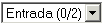

| Termo/Icone |
Nome/Texto |
Ação |
|
 | Menu de Pastas | Mostra a pasta corrente e a quantidade de mensagens. |
 | Nova Mensagem | Permite você compor uma nova mensagem. |
 | Pastas | Permite você ver, editar, excluir e criar pastas. |
 | Livro de Endereços | Abre o livro de endereços para você editar. |
 | Filtro de E-mail | Permite você criar filtros de e-mails de entrada. |
 | POP 3 | Recebe qualquer e-mail que foi enviado para você durante seu acesso. |
 | Pesquisa Avançada | Executa uma pesquisa detalhada na mensagem. |
 | Atualizar | Recarrega a página corrente. |
 | Mover para o Lixo | Move a(s) mensagem(ens) selecionada(s) para o lixo. |
 | Calendário | Abre o calendário e permite você fazer suas anotações diárias. |
 | Preferências do Usuário | Permite que você altere e personalize as preferências do usuário. |
 | Sair | Sai do OpenMail |
 | Menu de Destino | Move ou Copia as mensagens selecionadas para a pasta de destino selecionada no menu. |